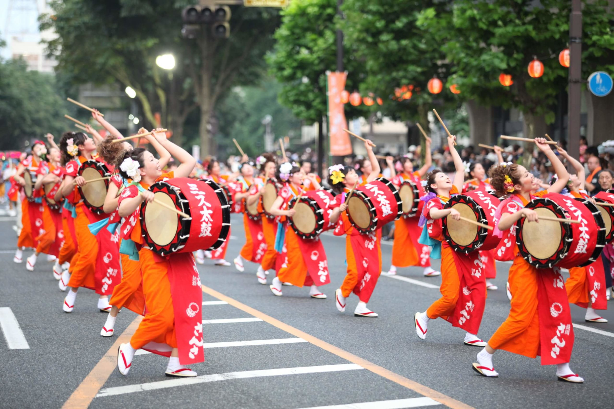
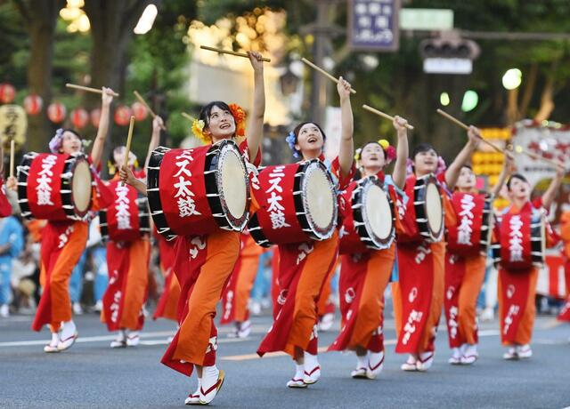
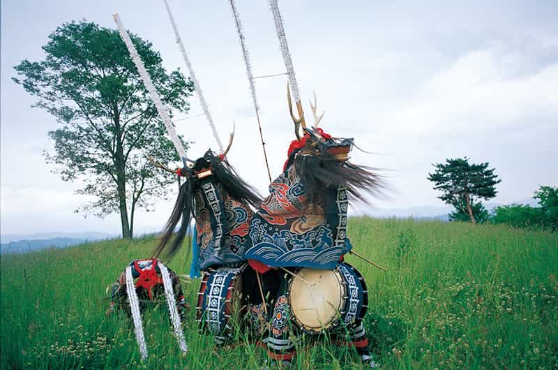
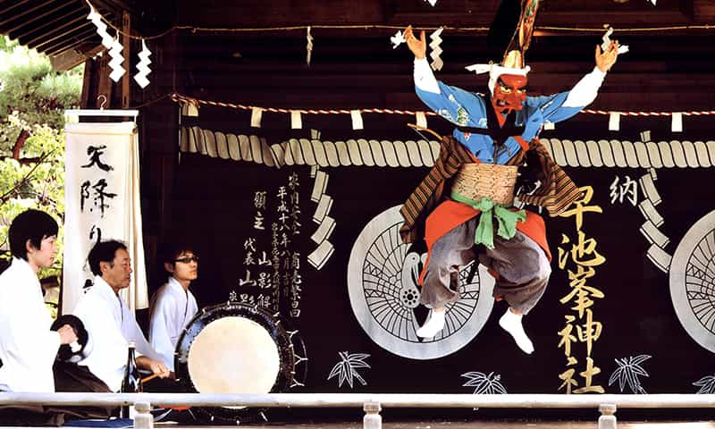
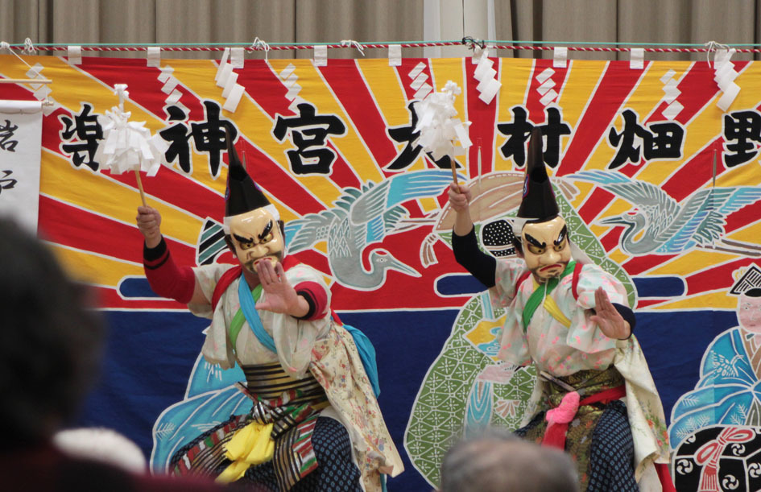
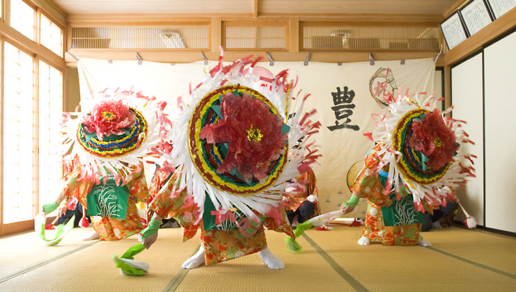
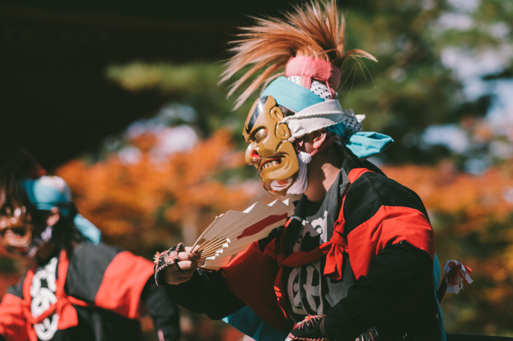

title


盛岡さんさ踊り
毎年8月1日から4日、盛岡市内の会場で華やかに行われている夏まつりです。 太鼓が参加する数では日本一を誇り「和太鼓演奏世界一」としてギネスブックにも認定されました。
アドレス

鹿踊
鹿踊とは地域の平安と悪霊の退散を祈願する舞で貴重な民俗芸能として、無形民俗文化財に指定されています。「花巻まつり」では、約30団体が一堂に会し、それぞれに伝わる鹿踊を披露します。
アドレス

早池峰神楽
早池峰神楽は大償（おおつぐない）と岳（たけ）の2つの神楽座の総称で、1976年5月4日、国の重要無形民俗文化財に指定され、2009年にユネスコの無形文化遺産に登録されました。
アドレス

大宮神楽
大宮神楽は、大宮権現の獅子頭を奉じ、かつては正月の3日、および6月15日の例祭において大宮神社で舞われ、また村内を巡業し、夜遅くまで熱のこもった舞がくり広げられました。
アドレス

山屋の田植踊
山屋の田植踊は、県南部地方のニワ（内庭・土間）で踊る「庭田植え」とは異なり、早乙女（しょうとめ）の笠ふりと間をつなぐ仲踊が中心となり座敷で踊る「座敷田植え」と呼ばれるものである。
アドレス

朴ノ木沢念仏剣舞
朴ノ木沢念仏剣舞は、奥州平泉で無念の最期をとげた源義経主従を鎮魂するためにつくられた「高館物怪（たかだてもっけ）」を継承しているといわれ亡霊たちの心も和らぎ成仏した、という由来に基づく踊りである。
アドレス